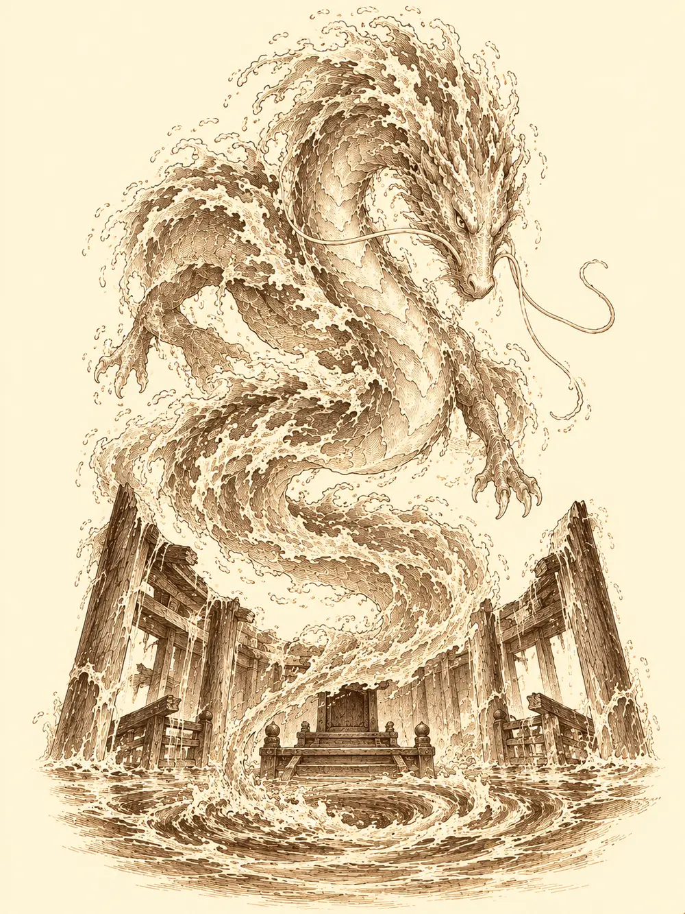

Capítulo 50
El guardián del Este
Libro IV · Los guardianes del Oeste y del Este
Cuando los caballos se cansaban, Shiru se ponía en su lugar. Tomaba la vara de la carreta con las dos manos, bajaba la cornamenta y tiraba, y el caballo subía detrás y viajaba sentado, mirando el paisaje con la indiferencia de un noble. Así llevaban casi una semana de camino entre Sho y Ukio.
Iban cuatro. Ya tenían la bendición de Byakko, el tigre del Oeste, y las pesquisas de Guxi, de Sirth y del librero habían señalado dónde estaba el segundo templo: en el bosque cercano a Ukio, el que conocían mejor que ninguno, en su costado oriental. Allí, si la leyenda era cierta, aguardaba el guardián del Este. Si querían que los cuatro protectores defendieran Kuroto de Otakemaru, había que despertarlos uno a uno.
Por el camino cada cual había seguido con lo suyo. Jin había picado piedra siempre que había podido. Shiru había pasado los días anteriores en la herrería del shogun, mirando cómo trabajaba el maestro, y la panadera le había dado cincuenta monedas por ayudarla. Ikari practicaba por las noches sus conjuros nuevos y por las mañanas, cuando estaba más lúcido, la costura.
Sun Gukon no hacía nada. Desde que Tang le había dicho que no era el Rey Mono se había hundido. Bebía, lloraba, no se lavaba. Sus compañeros habían tenido que sacarlo a rastras de su habitación de Sho, meterlo en el agua y vestirlo, porque se paseaba desnudo con el bastón en una mano y una botella en la otra. Ahora iba en la carreta con la mirada perdida. Lo intentaron con chistes, con elogios, con palmadas en la espalda. Nada.
"Yo era el Rey Mono desde que bajé de la montaña. Resulta que no. Soy una estafa".
Ikari, por su parte, iba bebiendo, y la borrachera se le fue pasando al acercarse a Ukio. Fue entonces cuando se acordó del encargo. Antes de salir, Danifae le había pedido, con mucha amabilidad y rascándole detrás de la oreja, que le trajera del templo del Este un orbe de cristal. Ya tenía otro con un rayo dentro, el que le había llevado Maroxi; este debía de ser frío, tan frío que se pegaba a las manos. No le había explicado para qué lo quería.
En la posada de Kitaro, Shiru vio a Zia y se le olvidó la timidez durante un segundo. La abrazó, la levantó del suelo, la miró desde arriba. Después recordó que era tímido, la soltó y se quedó muy tieso.
"Hola".
"Hola", dijo ella, rascándose una oreja, mirando hacia otro lado. "Qué fuerte eres".
Shiru dio un cabezazo contra la mesa de la emoción y empezó a sangrarle la nariz. Se la limpió con una servilleta con toda la dignidad que pudo. Ella le sonrió, muy nerviosa, y se fue a otra mesa a atender.
Jin se le sentó al lado con un colgante en la mano, uno que había hecho Guxi.
"Para un regalo. Es bueno".
Shiru lo cogió encantado y se lo guardó. Al enterarse de que tenía que pagarlo, se lo devolvió.
Kitaro les puso comida y bebida. Sun dejó caer la cara sobre la mesa. Entonces se acercó Lea, la conocida de la posada, y le dio un toque en el hombro.
"¿No me vas a decir nada?".
Sun se tapó la cara. "No me mires. No merezco que me hables".
"Ya sabía yo que no eras el Rey Mono. Me daba igual".
Se lo dijo de muchas maneras. Que lo que había hecho seguía siendo suyo. Que había luchado de verdad, había ayudado a gente de verdad. Que cuando volviera del templo se lo contara, y que podían escribir juntos un libro nuevo con sus propias historias.
"Mis historias son mentira".
"Pues escribe una que no lo sea".
Sun se abrazó a ella y lloró. Ella le dio unas palmaditas en la espalda que sonaban como golpes de tambor.
Desde el aire, sobre la mesa, apareció la nube. Era amarilla y estaba de mal humor.
"Yo ya te dije que no eras el Rey Mono. Mírate, llorando todo el día. Si quieres que te ayude, demuéstrame que vales algo".
"¿Y así es como me animas?".
"Yo soy una nube".
Flotó hasta Ikari, lo miró de arriba abajo y el tanuki se quedó mirando su botella de sake, dudando de si aquello era real.
La base de Ukio los recibió con dos guardias mujina con la boca manchada de comida y la armadura puesta del revés, como quien se ha vestido a toda prisa al oír pasos. Ikari les dio una colleja a cada uno.
"Perdón, señor. No volverá a pasar".
Dentro sonaba una fiesta. Jone, la dueña del burdel, Mosto y los demás que habían cuidado la casa estaban borrachos como cubas, y el gato gigante dormitaba sentado en el suelo con cara de felicidad. Las habitaciones estaban intactas, la despensa llena, el niño dormía como un bendito. Ikari revisó la comida sin saber decir cuánta faltaba. Nadie le hizo mucho caso. Jone le dio un abrazo.
"Venid. Bebed".
Habían ido a descansar. Bebieron. Jone repartía vino, Mosto hablaba sin que nadie le entendiera y a Sun le llenaron el vaso varias veces mientras alguien le preguntaba qué le pasaba exactamente. Se acostaron tarde y durmieron mal. Por la mañana, en la sala, Jone roncaba sobre la mesa con Mosto encima y los monos dormían unos sobre otros. Jin se levantó fresco. Los demás arrastraban los pies, y Sun, que no había dormido bien desde Sho, apenas podía con su alma.
El mapa del librero los llevó por el bosque hasta un acantilado sobre el mar, en el costado oriental. Allí, medio comido por las olas, había un templo. El agua había ido subiendo con los siglos y se había tragado parte de él; la puerta principal estaba caída, no derribada por nadie, solo vencida por los años. Pero en la entrada ardían antorchas.
Ikari encontró huellas de humanoides, viejas. No supo decir de quién. Dentro, en la primera sala, había estatuas rotas y pinturas en las paredes, casi borradas. Las figuras eran aarakocra: hombres pájaro con alas abiertas. Sun entró detrás de los demás, se sentó en el suelo y se puso a llorar.
"¿Para qué me habéis traído, si no voy a poder ayudar?".
Shiru le puso las manos en los hombros. "Tú eres lo que eliges ser".
Jin y Shiru empujaron una puerta doble de piedra con un aarakocra en relieve. Pesaba una barbaridad. Al abrirla, de la pared salió un chorro de hielo que los atravesó a los dos y los dejó tiritando. En la biblioteca, los libros se deshacían en polvo en cuanto alguien los tocaba.

Más allá, el templo se hundía en el mar. Unas escaleras bajaban a una zona completamente inundada, y no había más camino que bucear. Jin cruzó sin problema. A Ikari, que hacía años que no tragaba otra cosa que sake, el agua se le metió en los pulmones a mitad de camino y empezó a ahogarse en la oscuridad. Jin volvió a por él y salió otra vez sin aire. Entonces un palo apareció junto a la mano del tanuki. Ikari se agarró, alguien tiró desde el otro lado y lo sacó rojo como un tomate, tosiendo agua salada. Era el bastón de Sun.
Al otro lado el agua les llegaba por la cintura y cada paso costaba el doble. Sun abrió una puerta de madera podrida, que se deshizo al tocarla, y un tiburón enorme se le echó encima de un mordisco.
Había más. Toda una sala de tiburones, uno de ellos tan grande que se quedó atascado en un paso y se dedicaba a embestir el marco una y otra vez. Jin los cortaba con la espada envuelta en fuego, aunque el agua le apagaba la mitad de los golpes. Ikari se hundía hasta los ojos, como un cocodrilo, y acechaba. Shiru agarró a uno de los tiburones, lo arrastró hasta el atascado y se apartó en el momento justo: el pequeño, desorientado y sangrando, le clavó los dientes al grande y lo destrozó. Entre todos acabaron con los que quedaban.
En la sala siguiente flotaban dos sectarios muertos, hinchados por el agua, mutilados. A uno le faltaba medio cuerpo y al otro una pierna. Llevarían allí una semana más o menos. Quizá las huellas de la entrada fueran suyas; nadie podía asegurarlo. Llevaban encima unas monedas, una daga y las máscaras de siempre.
Revisaron mejor las salas. Shiru metió la mano entre los restos de una biblioteca anegada y la retiró de golpe: había tocado algo tan frío que quemaba. Era una esfera de cristal. La envolvió en un trapo antes de cogerla.
"Si esto es lo que quiere la drow, se lo guardo yo. No me fío de ella".
Y se la quedó.
Jin, entre tanto, consiguió leer algunas de las hojas que flotaban por la sala. Hablaban de que aquel templo lo habían levantado aarakocra, y de que aarakocra lo habían habitado, hacía muchísimo tiempo.
El altar estaba al norte, medio hundido, sin nada encima. Sun lo reconoció enseguida: era igual que el del templo del tigre. En la piedra había símbolos de hielo y de agua y un dragón largo, de los que se dibujan como serpientes con patas. Recordó lo que les había dicho el librero: que el guardián del Este era Seiryu, un dragón hecho de agua.
Allí no había figuras que mover ni piezas que colocar. Buscaron durante un buen rato. Al final, alguien propuso rezar.
Jin se arrodilló el primero, juntó las manos y rezó en silencio. Shiru se colgó unas cuentas de los cuernos. Alguien congeló un poco de agua delante del altar como ofrenda, para que el dragón estuviera cómodo. Sun, de rodillas, pidió para sus adentros volver a ser rey.
El agua empezó a girar alrededor del altar. Se levantó en un remolino, se estiró hacia arriba, se enroscó como una serpiente enorme y tomó forma: una cabeza larga, bigotes, escamas de espuma. Un dragón de agua los miraba desde lo alto.
"¿Quiénes sois?".
"Cazadores. Venimos por lo que se acerca. Por Otakemaru".
Shiru sacó entonces su caja de hielo y la abrió. Dentro, congelada, estaba la cabeza de un general enemigo, que había guardado como prueba del peligro. El dragón se deshizo en agua, se alargó hasta la caja, se volvió a formar delante de ella y la estudió en silencio. Después los fue mirando uno a uno, despacio, y al llegar a Sun se detuvo. Se le enroscó alrededor, olfateándolo.
"Tú llevas la bendición de Byakko".
"Del gato grande, sí. Somos colegas".
"Lo dudo, pequeño mono".
Le pidieron su bendición. No parecían malas personas, admitió el dragón, pero tendrían que demostrar que eran dignos. Volvió a su altar.
"Demostradme vuestro valor".
Sun llamó a su nube. La nube apareció, lo miró y se negó.
"Demuéstrame que vales. Si me necesitas para pegarle a un dragón, menudo Rey Mono".
El agua se levantó. Un remolino se abrió en el centro de la sala y arrastró a Jin y a Shiru hacia dentro, dando vueltas. Jin golpeó al dragón con su espada de fuego y descubrió que el fuego apenas le hacía nada. Seiryu abrió las fauces y exhaló un aliento helado que les quemó la piel de frío. Una ola gigantesca recorrió la sala y los estampó a todos contra las paredes.
Sun atacó cuatro veces y no acertó ninguna. Se quedó quieto en el agua, con el bastón colgando.
Shiru no paraba. Golpeaba con el escudo, lo lanzaba y lo recogía. Ikari llamó a su perro de sombras, que se lanzó a morder el agua viva, y cuando el dragón le clavó dos zarpazos helados en el cuerpo, el tanuki apretó los dientes y le devolvió una magia que abría heridas. Lo alcanzó de lleno.
El dragón chilló y se derritió. Se deshizo en agua entre ellos, y por un momento solo hubo un charco que se movía. Después volvió a formarse, entero, y los miró.
"Habéis demostrado tener valor. Algunos más que otros". Miró a Ikari. "Parece que Byakko tenía buen ojo con vosotros".
Se acercó al tanuki y tocó con una uña el colgante que llevaba al cuello. El colgante se cubrió de escarcha. Ikari no sintió frío ninguno. A partir de entonces sus hechizos llevarían también un mordisco de hielo.
Después puso la mano entera sobre la armadura de Shiru, que se congeló pieza a pieza hasta convertirse en una placa de hielo mágico que no se derretía y lo protegería del frío. A Jin le pidió la mano. El guerrero se la dio, desconfiado, y sus guantes se escarcharon: con ellos podría tocar a un enemigo y dejarlo clavado en el sitio, quieto, sin poder moverse ni reaccionar.
"Esto no hace daño", protestó Jin. "Prefiero otra cosa".
No hubo otra cosa. Los guantes eran suyos y solo suyos, como todo lo que el dragón había tocado.
Por último el dragón miró a Sun y le tocó un anillo hecho de ramitas. En el centro brotó una joya de hielo y el anillo se volvió de verdad. Con él, una vez cada tanto, podría convertirse en un bloque de hielo y nada le haría daño, salvo el fuego.
Sun le dio vueltas en el dedo. Por primera vez en semanas se le iluminó un poco la cara.
"Me subo a la nube, vuelo, me convierto en bloque y me tiro encima de alguien".
Seiryu sonrió con su boca de agua. Desde arriba, mientras se deshacía, les llegó su voz: a ver si conseguían el mismo favor de los otros dos.
Dos de cuatro. Shiru llevaba un orbe helado envuelto en un trapo que no pensaba entregar a nadie. Sun llevaba un anillo nuevo y la misma pena de siempre.
"Vamos a descansar", dijo Jin. "Esta vez a descansar de verdad".
Volvieron a meterse en el agua para salir.